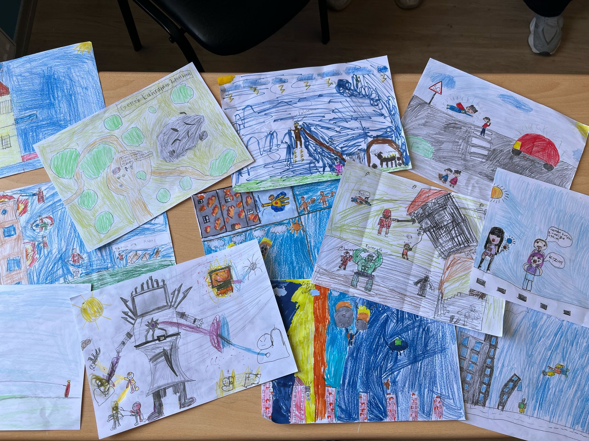
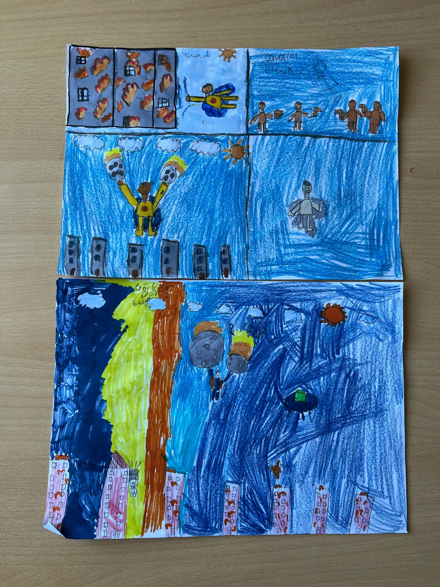
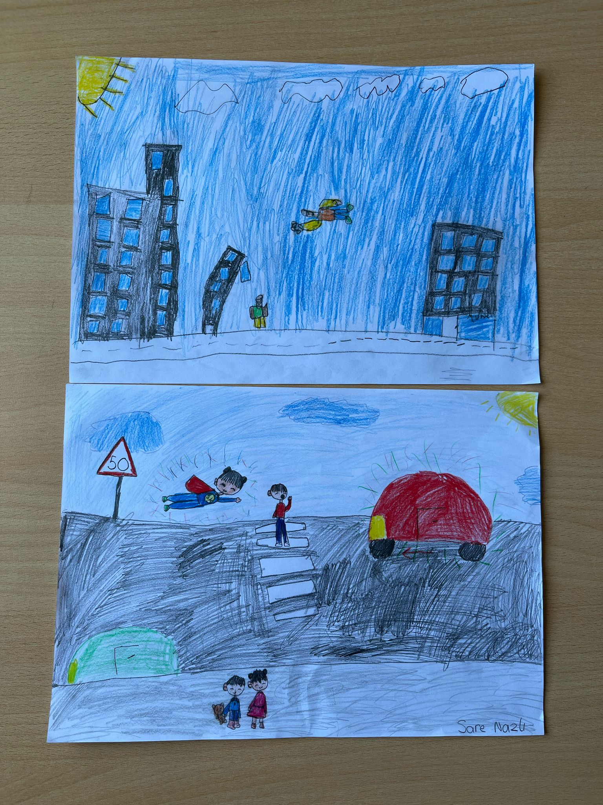

Welcome to Page 1: Discover amazing arts of child.
Page 1: Art Competition
Art Competition of Child
We asked the children to draw a picture in which they consider themselves superheroes, and here are the creative ideas that came up.

Actually, we wanted to choose a winner from all these pictures, but we declared them all winners because we liked all of the pictures very much.


Differences Between Ancient and Modern Dire Wolves
Feature
Ancient Dire Wolves (Canis dirus)
Modern Gray Wolves (Canis lupus)
Size
Larger and more muscular
Smaller and leaner
Fur Color
Generally white
Various colors
Jaw Structure
Stronger and wider
Thinner and longer
Habitat
North and South America
Widespread across the globe
Social Structure
Pack hunters
Diverse social structures
Genetic Diversity
High
Lower
About Romulus, Remus, and Khaleesi
Romulus and Remus: Male pups born on October 1, 2024. Their names reference the legendary twin founders of Rome.
Khaleesi: A female pup born on January 30, 2025. Her name is a reference to the character Daenerys Targaryen from the “Game of Thrones” series.
These pups live on a 2,000-acre protected area in the U.S., designed to mimic their natural habitats, and are being raised under veterinary supervision.
Another Project by This Company: Woolly Mammoth
Led by: Colossal Biosciences
Goal: To create a “mammoth-like species” by hybridizing the extinct woolly mammoth with the Asian elephant.
Criticism:
Only a mammoth-like animal is being created, not a real mammoth.
It is unclear where this new mammoth-like species will live.
Ecological Balance Issues
Introducing cloned species into natural ecosystems, may cause imbalances.
Large predators like dire wolves, if reintroduced, could threaten the lives of current species.
Page 2 continues your journey with science and imagination!
Page 2: World Wonders
CHEESE ROLLING
Dear readers, today we would like to tell you about an extraordinary event. Did you know that there is a competition where a wheel of cheese reaches speeds of 100 km/h and rolls down the hill faster than the people chasing it?
Cheese rolling is a world-famous and unusual event with centuries-old roots, traditionally held each year at Cooper’s Hill in Gloucestershire, England. At the heart of the competition lies a large wheel of cheese—typically a hard, round Double Gloucester weighing around 3 to 4 kilograms—that is rolled down a steep hill, with participants chasing after it all the way to the bottom. The downhill course is grass-covered, uneven, full of holes, and extremely slippery. This makes it nearly impossible for participants to run in a straight line; most of them end up tumbling, falling, or rolling their way down rather than descending in a controlled manner. The cheese can reach incredibly high speeds within seconds—up to 100 km/h—making it virtually impossible to catch. However, the goal of the race isn’t to catch the cheese itself, but to reach the bottom of the hill as quickly as possible alongside it. The event is held in multiple rounds, separately for men and women, and the winner of each round takes home the actual rolling cheese as a prize.
Although the event may seem fun and entertaining, it can lead to serious injuries. During the race, participants often suffer from broken bones, sprains, and head injuries, which is why ambulances and medical teams are stationed at the bottom of the hill throughout the event. Most racers do not wear any protective gear; some show up in running shoes, while others race completely barefoot. Every year, hundreds of people register to take part in the race, while thousands of spectators—including both locals and tourists from around the world—gather to witness the spectacle.
While the exact origins of the race remain unclear, written records date back to the 1800s. It is widely believed that the event has roots in ancient Pagan rituals, symbolizing the arrival of spring and the renewal of nature. Over the years, the cheese rolling race has gained international fame, inspiring similar events in various parts of the world.
In Turkey, however, such races are not officially common. Occasionally, playful, small-scale versions are organized during local celebrations, village festivals, or as humorous content for social media. These lighthearted events typically use foam or plastic props instead of real cheese, focusing on entertainment and comedy. Although the more intense, physically demanding versions of the race are not held in Turkey, the idea of cheese rolling continues to capture the public’s imagination with its visual appeal and cultural uniqueness.
Test your knowledge with our interactive quiz.
Quiz
1. Which word means “very happy”?
2. What is the past form of 'go'?
3. Choose the correct sentence.
4. Which one is a fruit?
5. What do we use to write?
6. What is a synonym for 'complex'?
7. Choose the correct passive form: 'She wrote a book.'
8. Which sentence uses reported speech?
9. What is the noun form of 'decide'?
10. What is the meaning of 'innovative'?
11. The direwolf ___ in ancient times.
12. Young players ___ soccer every weekend.
13. NASA ___ experiments with plants last year.
14. Animals ___ interesting communication methods.
15. He ___ a robot to clean the beach.
Check your answers and track your progress here.
Answers
1: B ✅ 2: A ✅ 3: B ✅ 4: C ✅ 5: D ✅ 6: A ✅ 7: B ✅ 8: C ✅ 9: A ✅ 10: D ✅ 11: A ✅ 12: C ✅ 13: D ✅ 14: B ✅ 15: C ✅
Page 5 explores the brave new world of AI and digital assistants!
Page 5: The Rise of AI
CHATGPT: THE AI THAT TALKS BACK
Artificial Intelligence (AI) is no longer just a science fiction concept—it’s part of our everyday lives. One of the most popular examples is ChatGPT, a conversational AI developed by OpenAI. It can answer questions, help write texts, translate languages, and even assist in coding.
ChatGPT works by predicting the next word in a sentence based on patterns it has learned from large amounts of data. This allows it to generate surprisingly human-like responses. Whether you're doing homework, writing a poem, or just curious about something, ChatGPT is here to help.
Many people now use AI tools to improve productivity. Teachers use them to create lesson plans, students get help with studying, and businesses use AI to write emails, analyze data, and provide customer support. It’s like having a super assistant at your fingertips.
But with great power comes great responsibility. Experts warn that we must use AI ethically—avoiding plagiarism, double-checking facts, and being aware of privacy issues. It’s a tool, not a brain. Critical thinking is still important.
In Turkey and around the world, students and professionals alike are exploring how to use AI wisely. Schools are starting to teach about artificial intelligence to prepare the next generation for the digital future.
Page 6 showcases the power of teamwork and collaboration!
Page 6: Working Together
THE POWER OF TEAMWORK
Great achievements are rarely made alone. Whether in school, sports, or business, working together allows people to share ideas, solve problems faster, and create stronger results.
Effective teamwork relies on communication, trust, and respect. Listening to each other, dividing tasks fairly, and supporting one another are all key components.
In schools, group projects teach students how to collaborate. Each team member contributes their strengths—whether it’s writing, designing, or researching—to reach a common goal.
As the saying goes, “Teamwork makes the dream work.” Even the biggest challenges can become easier when people work hand in hand.
Page 7 celebrates cultural diversity and global understanding!
Page 7: Celebrating Culture
FESTIVALS AROUND THE WORLD
Festivals bring people together and are a beautiful way to celebrate culture, tradition, and community. Each country has its own unique festivals, often filled with music, dance, and delicious food.
In India, Holi is the festival of colors, where people throw powdered dye and enjoy joyful gatherings. In Brazil, Carnival features parades, costumes, and samba music that light up the streets.
Turkey celebrates National Sovereignty and Children’s Day on April 23rd, a holiday that honors children and the country’s independence. Schools hold performances, and children take over parliament for a day.
Learning about global festivals helps us understand and respect each other’s cultures, making the world a more connected and peaceful place.
Test your knowledge with our interactive quiz.
Bringing Dire Wolves Back to Life
Dire wolves (Canis dirus), which went extinct approximately 12,700 years ago, were a large and powerful species of canine that live in North and South America during the last Ice Age.
In 2025, Colossal Biosciences produced three pups through genetic engineering and cloning of gray wolves to resemble dire wolves.
These pups were named Romulus, Remus, and Khaleesi.
However, these animals are not true dire wolves; they are genetically modified gray wolves. Although the company presents this project as a scientific achievement, experts often view these efforts as a show.
Differences Between Ancient and Modern Dire Wolves
Feature
Ancient Dire Wolves (Canis dirus)
Modern Gray Wolves (Canis lupus)
Size
Larger and more muscular
Smaller and leaner
Fur Color
Generally white
Various colors
Jaw Structure
Stronger and wider
Thinner and longer
Habitat
North and South America
Widespread across the globe
Social Structure
Pack hunters
Diverse social structures
Genetic Diversity
High
Lower
About Romulus, Remus, and Khaleesi
Romulus and Remus: Male pups born on October 1, 2024. Their names reference the legendary twin founders of Rome.
Khaleesi: A female pup born on January 30, 2025. Her name is a reference to the character Daenerys Targaryen from the “Game of Thrones” series.
These pups live on a 2,000-acre protected area in the U.S., designed to mimic their natural habitats, and are being raised under veterinary supervision.
Another Project by This Company: Woolly Mammoth
Led by: Colossal Biosciences
Goal: To create a “mammoth-like species” by hybridizing the extinct woolly mammoth with the Asian elephant.
Criticism:
Only a mammoth-like animal is being created, not a real mammoth.
It is unclear where this new mammoth-like species will live.
Ecological Balance Issues
Introducing cloned species into natural ecosystems, may cause imbalances.
Large predators like dire wolves, if reintroduced, could threaten the lives of current species.
Check your answers and track your progress here.
Answers
1: B ✅ 2: A ✅ 3: B ✅ 4: C ✅ 5: D ✅ 6: A ✅ 7: B ✅ 8: C ✅ 9: A ✅ 10: D ✅ 11: A ✅ 12: C ✅ 13: D ✅ 14: B ✅ 15: C ✅